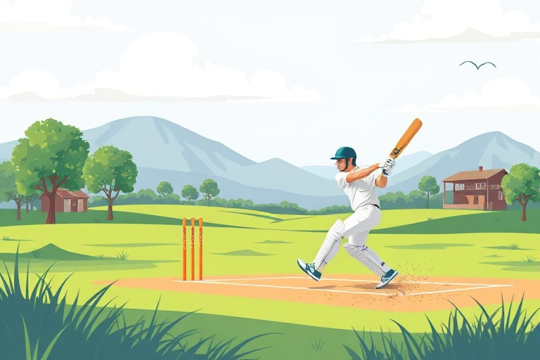

A Beginner's Guide to Cricket: Rules and Basic Skills

Category: cricket | Language: enCricket is a popular team sport played with a bat and a ball on a large circular field. The game involves two teams of eleven players each. At the center of the field is a rectangular area called the pitch, where most of the action happens. The main objective is to score more runs than the opposing team while protecting your wickets from being hit by the ball.
A match is divided into innings, during which one team bats and the other bowls and fields. The batting team tries to hit the ball and run between two sets of wooden sticks called wickets to score runs. Meanwhile, the bowling team tries to get the batters 'out' by hitting the wickets with the ball or catching a hit ball before it touches the ground. Once a certain number of players are out or a set number of 'overs' are completed, the teams switch roles.
There are several ways to score runs in cricket. The most common way is for the two batters to run to the opposite ends of the pitch after hitting the ball into an open space. If the ball reaches the boundary of the field after touching the ground, the team earns four runs. If the ball clears the boundary without touching the ground, it is worth six runs. These boundaries are crucial for building a high total score quickly.
To succeed in cricket, players must develop specific physical skills. Batters need good hand-eye coordination to time their shots and direct the ball away from fielders. Bowlers, on the other hand, focus on accuracy and speed. They aim to deliver the ball in a way that makes it difficult for the batter to hit, often using different techniques to make the ball bounce or curve in the air.
Fielding is just as important as batting and bowling. Fielders must be quick and alert to stop the ball and throw it back to the wickets to prevent the batters from scoring. Good communication and teamwork are essential for a successful fielding side. By working together to catch the ball or execute a 'run out,' the team can put pressure on the batters and end their innings more quickly.
If you are new to cricket, the best way to start is by practicing the basics with simple equipment. Focus on your stance, which is how you stand at the wicket, and practice swinging the bat smoothly. Watching professional matches can also help you understand the different strategies and the flow of the game. Joining a local club or community group is a great way to learn from others and enjoy the social side of this exciting sport.